Perspectives on Analysis and Design of
Human-Centered Robotics
IROS 2016 Workshop
October 10, 2016
Daejeon, Korea

Key Facts
- Workshop Date
- October 10, 2016
- Workshop Location
- Room 108
- Poster Submission Deadline
- October 1, 2016
- Contact Information
- iros2016-workshop@berkeley.edu
Overview of Workshop
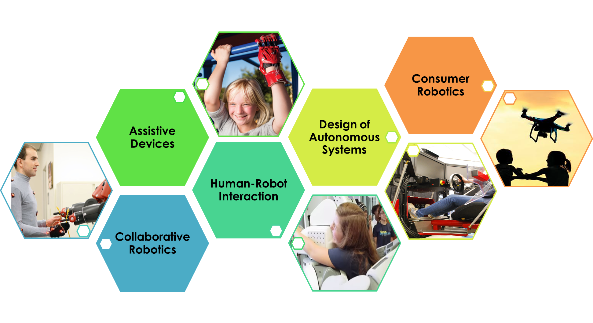It is an exciting and pivotal moment in the history of robotics. As the gap between theoretical research and fully-fledged technology continues to close, important advances from mechanical design to decision algorithms are enabling robots to reliably carry out more complex tasks than ever before, unlocking an enormous potential for new applications. Once confined to the manufacturing floor, robots are quickly entering the public space at multiple levels: drones, surgical robots and self-driving cars are becoming tangible technologies impacting the human experience.
This workshop promotes a multidisciplinary discussion to consolidate different perspectives and align research efforts by highlighting some of the key existing technical methods for introducing autonomous robots into the human domain. We're bringing together researchers from industry and academia to discuss problems in the area of human-centered robotics. We seek to bring together people from areas spanning human modeling, human-robot interaction, and robotic systems design.
Call for Posters
Want to be involved? We're looking for interested participants in our demo and poster session, who can add a new perspective to human-centered robotics. You may present work in progress or an overview of related works.
Submit a title and abstract for your posters here by October 1, 2016.
Why should you attend?
This workshop is intended to gather researchers from industry and academia to discuss problems in the area of human-centered robotics. We seek to bring together people from areas spanning human modeling, human-robot interaction, and robotic systems design.
We open our workshop with perspectives on human modeling and how it should inform the analysis and design of human-robot systems. In a series of talks, we then learn about the relative merits of two modeling methodologies; template and anchor models will be discussed in relation to bio-inspired robotic locomotion. Highly detailed models that represent the full neuromuscular system will be explored, showing the potential for these methods to further our understanding of the neural basis of human motion. We then focus on the effects of these modeling methodologies on specific applications in grasping and human-robot interaction. We further discuss system design and analysis of human-centered robotics, including medical and surgical robots. We close our workshop with an open discussion hosting a panel of industry experts to gain additional perspectives on the future of human-centered robotics.
The goal of the workshop is to contrast and connect different approaches to the analysis and design of human-centered systems, from both model-based and data-driven standpoints. We expect the technical content to attract researchers across the spectrum of human-robot systems, including human modeling, human-robot interaction, and system design.
Tentative Schedule
Logistics: 25 minute talks followed by 5 minute discussions.
| 08:50 AM - 09:00 AM | Workshop Introduction |
| 09:00 AM - 09:30 AM | Aaron Ames |
| 09:30 AM - 10:00 AM | Peter Trautman |
| 10:00 AM - 10:30 AM | Discussion and Coffee Break |
| 10:30 AM - 11:00 AM | Ross Knepper |
| 11:00 AM - 11:30 AM | Antonio Bicchi |
| 11:30 AM - 12:00 PM | Cenk Cavusoglu |
| 12:00 PM - 02:00 PM | Lunch Break |
| 02:00 PM - 02:30 PM | Anca Dragan |
| 02:30 PM - 03:00 PM | Samir Menon |
| 03:00 PM - 03:30 PM | Oussama Khatib |
| 03:30 PM - 04:00 PM | Discussion and Coffee Break |
| 04:00 PM - 03:30 PM | Amit Kumar Pandey |
| 04:30 PM - 05:00 PM | Shuo Yang |
| 05:00 PM - 05:30 PM | Posters |
Invited Speakers
-
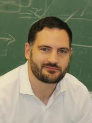
Aaron Ames
Aaron D. Ames is an associate professor at the Georgia Institute of Technology in the George W. Woodruff School of Mechanical Engineering and the School of Electrical and Computer Engineering as of July 2015. Prior to joining Georgia Tech, he was an associate professor and Morris E. Foster Faculty Fellow II in Mechanical Engineering at Texas A & M University, with joint appointments in Electrical and Computer Engineering and Computer Science and Engineering. Ames received a B.S. in Mechanical Engineering and a B.A. in Mathematics from the University of St. Thomas in 2001, and he received a M.A. in Mathematics and a Ph.D. in Electrical Engineering and Computer Sciences from UC Berkeley in 2006. At UC Berkeley, he was the recipient of the 2005 Leon O. Chua Award for achievement in nonlinear science and the 2006 Bernard Friedman Memorial Prize in Applied Mathematics. He served as a postdoctoral scholar in control and dynamical systems at the California Institute of Technology from 2006 to 2008. In 2010, he received the NSF CAREER award for his research on bipedal robotic walking and its applications to prosthetic devices. Ames’ research interests center on robotics, nonlinear control, hybrid systems, and cyber-physical systems with special emphasis on foundational theory and experimental realization on robotic systems. His research lab designs, builds, and tests novel bipedal robots and prostheses with the goal of achieving human-like bipedal robotic walking and translating these capabilities to robotic assistive devices.
-
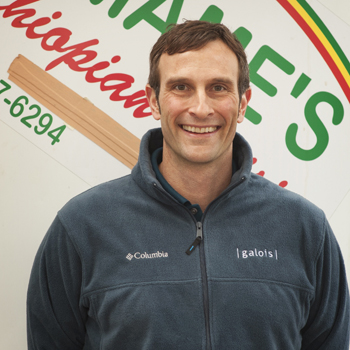
Peter Trautman
Pete Trautman received his B.S. in Physics and Applied Mathematics from Baylor University in 2000. He then entered the United States Air Force, serving first as an analyst at the National Air and Space Intelligence Center, and then as a program manager/researcher at the Sensors Directorate (RYAT). In 2005, he returned to graduate school at Caltech, completing his Ph.D. in Control and Dynamical Systems in 2012. His thesis research focused on robot navigation in dense human crowds, the result of which was a probabilistic model of human robot cooperation and a 6 month case study in Caltech’s student cafeteria. From 2012 until early 2014, Pete was a Senior Engineer at the Boeing company, where he developed navigation and localization technology for commercial aircraft assembly robots. Additionally, he served as the sensing team lead for Caltech’s DARPA Grand Challenge entry in 2006, has consulted for Toyon Research and Applied Minds Inc., and has conducted research in physics at the Los Alamos National Laboratory, the University of California at San Diego, and Worcester Polytechnic Institute. He was a Best Paper Finalist at ICRA 2013 for his work on autonomous crowd navigation. He now works at Galois, Inc. in Portland Oregon.
-
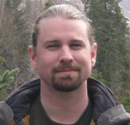
Ross Knepper
Ross A. Knepper is an Assistant Professor in the Department of Computer Science at Cornell University. His research focuses on the theory, algorithms, and mechanisms of automated assembly. Previously, Ross was a Research Scientist in the Distributed Robotics Lab at MIT. Ross received his M.S and Ph.D. degrees in Robotics from Carnegie Mellon University in 2007 and 2011. Before his graduate education, Ross worked in industry at Compaq, where he designed high-performance algorithms for scalable multiprocessor systems; and also in commercialization at the National Robotics Engineering Center, where he adapted robotics technologies for customers in government and industry. Ross has served as a volunteer for Interpretation at Death Valley National Park, California.
-
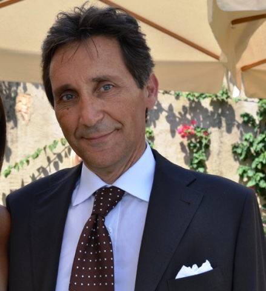
Antonio Bicchi
Antonio Bicchi is Professor of Robotics at the University of Pisa, and Senior Scientist at the Italian Institute of Technology in Genoa. He graduated from the University of Bologna in 1988 and was a postdoc scholar at M.I.T. Artificial Intelligence lab in 1988–1990. He teaches Control Systems and Robotics in the Department of Information Engineering (DII) of the University of Pisa, leads the Robotics group at the Research Center “E. Piaggio” of the University of Pisa since 1990, where he was Director from 2003 to 2012. He is an Adjunct Professor at the School of Biological and Health Systems Engineering of Arizona State University since 2013. His main research interests are in Robotics, Haptics, and Control Systems in general. He has published more than 400 papers on international journals, books, and refereed conferences. He is Editor-in-Chief of the IEEE Robotics and Automation Letters, which he started in 2015. He is Editor of the book series “Springer Briefs on Control, Automation and Robotics,” and of several scientific journals, including the Int.l J. Robotics Research, the IEEE Trans. on Robotics and Automation, IEEE Trans. Automation Science and Engineering, and IEEE RAS Magazine. He is Program Chair of the IEEE Int.. Conf. Robotics and Automation (ICRA'15), he has co-organized and chaired the first WorldHaptics Conference (2005), and Hybrid Systems: Computation and Control (2007). He served as the President of the Italian Association or Researchers in Automatic Control (2012-2013), as Editor in Chief of the Conference Editorial Board for the IEEE Robotics and Automation Society (RAS), as Vice President for Publications (2013-2014), for Membership (2006-2007), and as Distinguished Lecturer (2004-2006) of IEEE RAS. He is the recipient of several awards and honors. In 2012, he was awarded with an individual Advanced Grant from the European Research Council for his research on human and robot hands. Antonio Bicchi is a Fellow of IEEE since 2005.
-
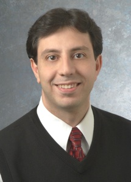
Cenk Cavusoglu
M. Cenk Cavusoglu received the B.S. degree in electrical and electronic engineering from the Middle East Technical University, Ankara, Turkey, in 1995, and the M.S. and Ph.D. degrees in electrical engineering and computer sciences from the University of California (UC), Berkeley, in 1997 and 2000, respectively. He is currently a Professor of Electrical Engineering and Computer Science at Case Western Reserve University, Cleveland, OH, with secondary appointments in Biomedical Engineering and Mechanical and Aerospace Engineering departments. He was a Postdoctoral Researcher and Lecturer at the Department of Electrical Engineering and Computer Sciences, UC Berkeley, from 2000 to 2002. He was a visiting Associate Professor at the Electrical and Electronic Engineering Department of Bilkent University, Ankara, Turkey from 2009 to 2010, and a visiting researcher at the INRIA Rhone Alpes Research Center, Grenoble, France, in 1998. Dr. Cavusoglu’s research involves applications of robotics and control engineering to biomedical and biologically-inspired engineered systems. Specifically, his research interests include robotics, systems and control theory, and human-machine interfaces, with emphasis on Medical Robotics, Haptics, Virtual Environments, Surgical Simulation, and Bio-System Modeling and Simulation. Dr. Cavusoglu has participated in 13 federally funded research projects, and has been PI on 6 such projects. Dr. Cavusoglu is a senior member of the Institute of Electrical and Electronic Engineers (IEEE). He has served as an associate editor for the IEEE Transactions on Robotics (2005-2009, 20012-2014) and as a technical editor for IEEE?AMSE Transactions on Mechatronics (2012-2013). In his career, Dr. Cavusoglu has written more than 83 peer reviewed publications, 4 book chapters, and has given more than 48 national and international invited presentations. He has graduated 5 PhD students and 12 MS students.
-
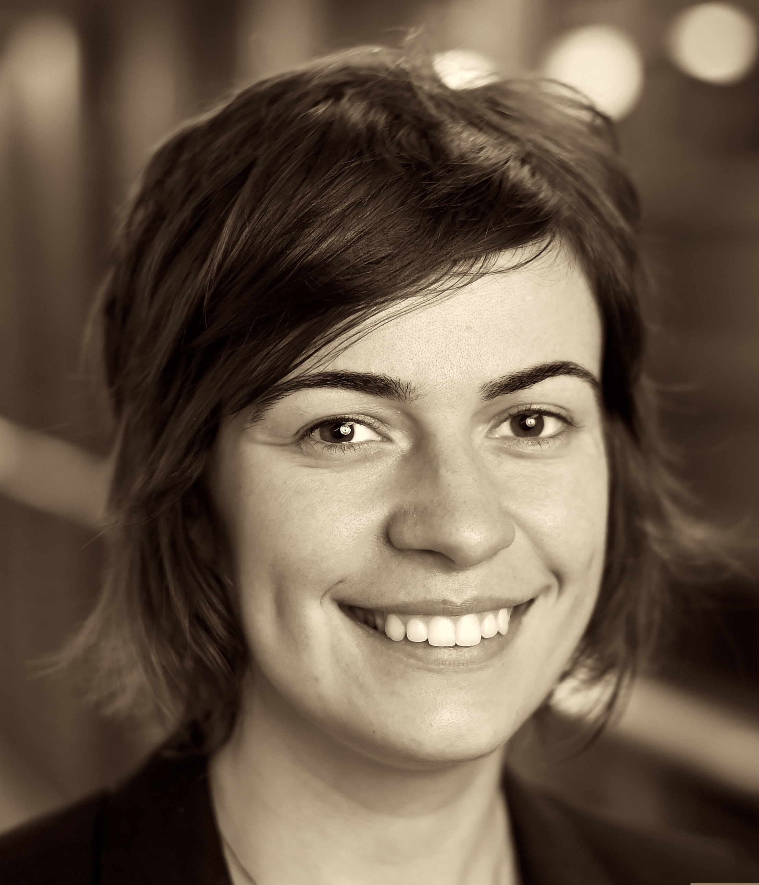
Anca Dragan
Anca Dragan is a new Assistant Professor in UC Berkeley's EECS Department. She completed her PhD in Robotics at Carnegie Mellon. She was born in Romania and received her B.Sc. in Computer Science from Jacobs University in Germany in 2009. Her research lies at the intersection of robotics, machine learning, and human-computer interaction: she works on algorithms that enable robots to seamlessly work with, around, and in support of people. Anca's research and her outreach activities with children have been recognized by the Intel Fellowship and by scholarships from Siebel, the Dan David Prize, and Google Anita Borg.
-
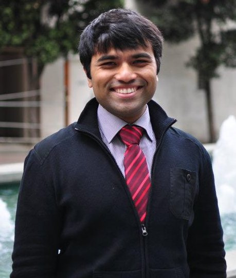
Samir Menon
Samir Menon is a Ph.D. candidate in Computer Science at Stanford University. Samir is focused on using robotic control theory and biomechanics to predict musculoskeletal coordination strategies for individuals, and on using neuroimaging to determine how these strategies map on to the brain. While at Stanford, Samir has been awarded two Stanford School of Engineering fellowships and one Stanford Interdisciplinary Graduate Fellowship. Prior to that, Samir completed his Bachelors in Technology at the Indian Institute of Information Technology, Allahabad, where he was awarded the university's merit scholarship.
-

Oussama Khatib
Oussama Khatib received his Doctorate degree in Electrical Engineering from Sup’Aero, Toulouse, France, in 1980. He is Professor of Computer Science at Stanford University. His work on advanced robotics focuses on methodologies and technologies in human-centered robotics including humanoid control architectures, human motion synthesis, interactive dynamic simulation, haptics, and human- friendly robot design. He is Co-Editor of the Springer Tracts in Advanced Robotics series, and has served on the Editorial Boards of several journals as well as the Chair or Co-Chair of numerous international conferences. He co-edited the Springer Handbook of Robotics, which received the PROSE Award. He is a Fellow of IEEE and has served as a Distinguished Lecturer. He is the President of the International Foundation of Robotics Research (IFRR). Professor Khatib is a recipient of the Japan Robot Association (JARA) Award in Research and Development. In 2010 he received the IEEE RAS Pioneer Award in Robotics and Automation for his fundamental pioneering contributions in robotics research, visionary leadership, and life-long commitment to the field. Professor Khatib received the 2013 IEEE RAS Distinguished Service Award in recognition of his vision and leadership for the Robotics and Automation Society, in establishing and sustaining conferences in robotics and related areas, publishing influential monographs and handbooks and training and mentoring the next generation of leaders in robotics education and research. In 2014, Professor Khatib received the 2014 IEEE RAS George Saridis Leadership Award in Robotics and Automation.
-
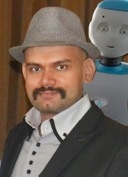
Amit Kumar Pandey
Dr. Amit Kumar Pandey is Head Principal Scientist (Chief Scientist) at SoftBank Robotics (formerly Aldebaran Robotics), Paris, France, also serving as the scientific coordinator (R&D) of its various collaborative projects. Earlier for 6 years he worked as researcher in Robotics and AI at LAAS-CNRS (French National Center for Scientific Research), Toulouse, France. His Ph.D. thesis in Robotics (title: Towards Socially Intelligent Robots in Human Centered Environment), is the second prize winner (tie) of the prestigious Georges Giralt Award for the best Ph.D. Thesis in Robotics in Europe, awarded by euRobotics (the European Union Robotics Community). His current research interest includes Socially Intelligent Robots, Human Robot Interaction (HRI), Robot’s Cognitive Architecture and Lifelong Learning. On these aspects, he has been actively contributing as principal investigator, researcher, and industrial scientific coordinator in various national and European Union (EU) projects, as well as involved in their design and proposal. Among other responsibilities, he is the founding coordinator of Socially Intelligent Robots and Societal Applications (SIRo-SA) Topic Group (TG) of euRobotics, and an active contributor in the Multi-Annual Roadmap (MAR) and Strategic Research Agenda (SRA) of euRobotics, which aim to shape the future of robotics in Europe in collaboration with European Commission (EC) through PPP SPARC (the largest civilian-funded robotics innovation programme in the world). He is also the recipient of Pravashi Bihari Samman Puruskar 2014 (Non Residential Bihari Honour Award), for Science, Technology and Education, one of the highest level civilian honors, awarded by the state of Bihar, India.
-

Shuo Yang
Shuo Yang is Director of Intelligent Navigation Technology of DJI. He obtained his bachelor degree in computer engineering and master degree in electronic and computer engineering from Hong Kong University of Science and Technology (HKUST). In DJI, Shuo developed flight control software framework and various intelligent flight functions. He designed DJI developer drone platform Matrice 100 to support drone navigation research. He is also in charge of DJI RoboMasters department, a department dedicated to operate robot competitions for university students and robotics hobbyists.
Organizers
-
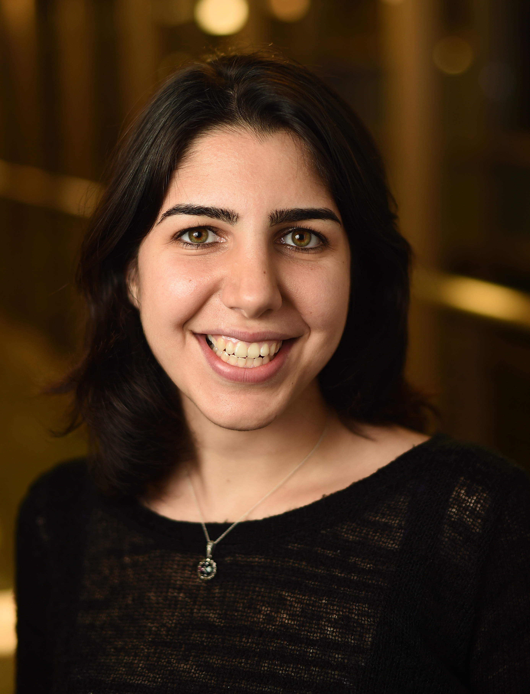
Dorsa Sadigh
Dorsa Sadigh is a Ph.D. candidate in the Electrical Engineering and Computer Sciences department at UC Berkeley. Her research interests lie in the intersection of control theory, formal methods and human-robot interactions. Specifically, she works on developing algorithms with provable guarantees for human cyber-physical systems such as semiautonomous vehicles. Dorsa graduated from Berkeley EECS undergraduate program in 2012. She is awarded the NDSEG and NSF graduate research fellowships as well as Leon O. Chua departmental award, and Google Anita Borg Scholarship.
-
Katherine Driggs-Campbell
Katie was born and raised in Phoenix, AZ, and attended Arizona State University, graduating with a B.S.E. in Electrical Engineering in May 2012. She is currently a PhD Candidate in the Department of Electrical Engineering and Computer Sciences at UC Berkeley. Katie works with Professor Ruzena Bajcsy to study how humans and robots can interact and assist each other in everyday life. Specifically, she works on the interaction between drivers and autonomous vehicles. Katie enjoys being involved in the community and outreach, as well as learning new fun facts.
-
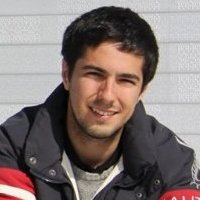
Jaime Fisac
Jaime F. Fisac is a Ph.D. candidate in the Electrical Engineering and Computer Sciences Department at UC Berkeley, working in the area of Control, Intelligent Systems and Robotics. He received his B.S./M.S. in Electrical Engineering from the Universidad Politécnica de Madrid (Spain) in 2012 and an additional M.Sc. in Autonomous Vehicles from Cranfield University (United Kingdom) in 2013. His research combines optimal control and dynamic game theory with Bayesian learning and cognitive science, aiming to understand how autonomous systems can learn to collaborate closely with people while guaranteeing safety.
-
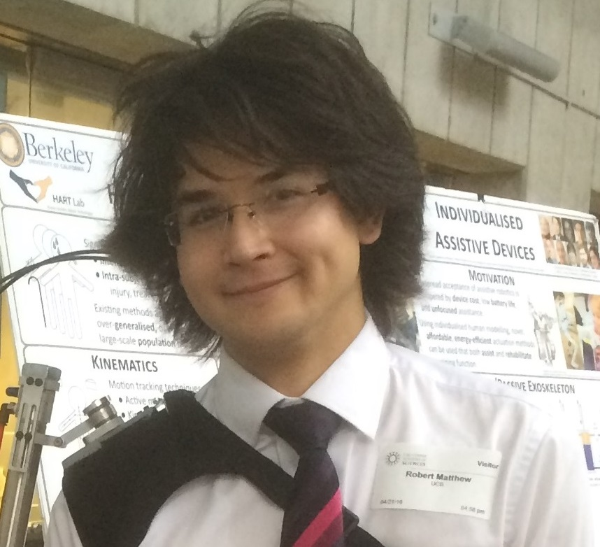
Robert Matthew
Robert received their Masters in Mechanical Engineering from Imperial College London in 2011, and a Masters of Science in Electrical Engineering from UC Berkeley in 2015. Robert received the Advanced Leadership award from the Royal Academy of London in 2008, became an Associate of the City and Guilds of London in 2011, and received the Berkeley Excellence Fellowship in 2011. They have worked in a number of international labs, including surgical and space robots, exoskeletons and is currently a PhD Candidate at UC Berkeley and Lab Manager for the Human-Assistive Robot Technologies Lab. In this role, Robert has helped mentor five graduate students, thirteen undergraduates, and has designed and run summer school curricula to encourage diversity in STEM subjects. Their current research focuses on the development of clinical human models that can be used to personalise interventions and prescribe assistive robotic devices.